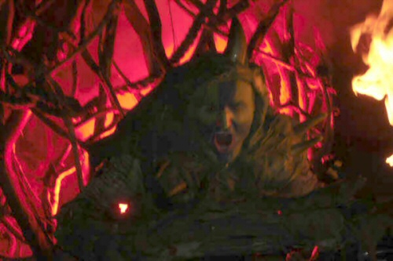

Highland Games Halle 2007

Alljährich findet seit 2005 auf der Halleschen Pferderennbahn eine lokale Ausgabe der Highland Games statt. Organisiert von Schottland-Fans eines lokalen Umzugsunternehmens, bieten diese einen unterhaltsamen Mix aus Kraftsport, Show, Musik und dem üblichen, von Mittelaltermärkten bekannten Wandervolk.
Wie die zwei Jahre zuvor hat es deshalb auch mich auf das Gelände an der Saale verschlagen. Den Auftritt von Tanzwut am Freitag habe ich mir noch von einer Geburtstagsfeier aus angehört, am Samstag gab es dann aber das volle Programm: Die Wettkämpfe der Amateure, Umzüge der Pipebands, Feuershow und Feuerwerk am Abend und natürlich den traditionellen Abschied mit dem Anzünden des Binsenmannes, einer zwölf Meter hohen Figur aus Stroh.
Generell muss ich beklagen, dass der Veranstaltung etwas die Innovationen fehlen. Jedes Jahr diesselben Stände (sogar Freenet war wieder da), jedes Jahr dieselben Auftritte der Steptänzerinnen und dieselbe langweilige, pseudo-keltische Hochzeit mit “Merlin & Morgana”. Doch dafür waren die Wettkämpfe selber sehr unterhaltsam, und die Feuershow mit den Stelzentänzern in ihren fantastischen Kostümen hat mich ebenso wie das Feuerwerk sehr begeistert.
Und dann kann man sich auf dem Gelände auch gut selber unterhalten. Im Keltendorf finden sich immer Utensilien für die sportliche Betätigung zwischendurch: Ein Seil zum Tauziehen, einen Holzbalken und Sandsäcke zum gegenseitigen Herunterschlagen oder Hufeisen zum traditionellen Horseshoe-Pitching. Da habe ich gleich etwas Praxis für das Sommerfest meines Arbeitgebers sammeln können.
Kleiner Gag am Rande: Es gab eine Verlosung der am weitesten angereisten Besucher der Veranstaltung. Der dritte Platz wurde dabei von einem Berliner aus Spandau belegt! Wenn ich gewusst hätte, wie leicht man dort Präsentkörbe von Halloren gewinnen kann…